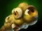
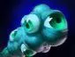
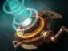
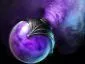

Зачем нужны командные предметы
Такие предметы помогают не только владельцу, но и союзникам. С их помощью можно спасать товарищей, давать обзор или лучше переживать драки. Выбирай предмет под ситуацию в матче.
Предметы для спасения

Force Staff. Толкает выбранного героя вперёд. Помогает спасти союзника или выбраться из опасности.

Glimmer Cape. Делает союзника невидимым на короткое время и помогает ему пережить магический урон.
Обзор и поиск врагов

Observer Ward. Ставит обзор на часть карты, чтобы команда могла видеть передвижения врагов.

Sentry Ward. Помогает обнаруживать невидимых врагов и вражеские варды рядом.
.webp)
Dust of Appearance. На короткое время раскрывает невидимых врагов поблизости.
Предметы для командных драк

Mekansm. Восстанавливает здоровье союзникам поблизости.

Pipe of Insight. Защищает союзников рядом от части магического урона.
Дым обмана

Smoke of Deceit. Помогает команде незаметно пройти по карте и вместе напасть на врага.
Кто покупает эти предметы
Их может купить любой герой, если это полезно команде. Часто такие покупки делают поддержки, но иногда другой предмет важнее. Обсуди план с командой и не покупай один и тот же предмет без необходимости.